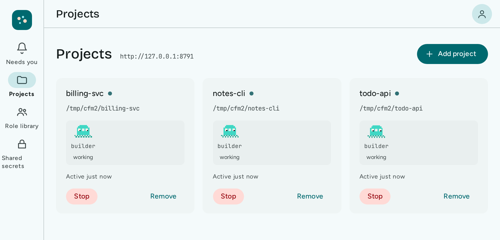
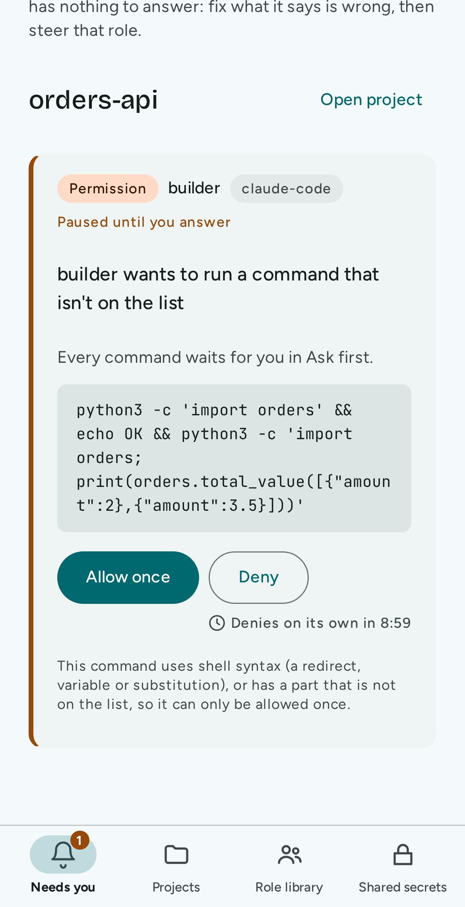
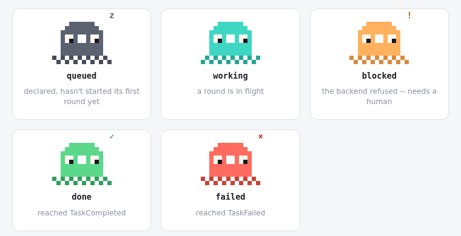

Register your software projects, give each a small crew of coding agents, and run all of them from one dashboard. You choose how much it asks: Ask first pauses on every shell command, Standard runs a list of safe ones and asks about the rest, and Auto runs everything except a short never-allowed list. A restarted daemon picks up unfinished teams.
Works with Claude Code Codex kopicode
The dashboard is a web app, with no native app yet. Answering from a phone needs an https page: Tailscale https or a relay.
curl -fsSL https://raw.githubusercontent.com/leejianrong/cuttlefish-crew/main/scripts/install.sh | sh
Paste it in a terminal on your computer. Runs on Linux and WSL2; macOS is untested. Needs git and curl. The installer adds uv and tells you if Node.js, tmux or an agent CLI is missing.
You choose how much it asks: Ask first pauses on every shell command, Standard runs a list of safe ones and asks about the rest, and Auto runs everything except a short never-allowed list. A restarted daemon picks up unfinished teams.

A real run: three Claude Code agents in Auto mode, each partway through a small edit to one file.

A real run in Ask first mode: the agent waits for your Allow once or Deny.
No org chart. No hiring workflow. No performance reviews. Just a handful of named agents, each with its own job, directed from one place.
A 57-second recording of three real Codex agents building three small tools: starting teams, answering their questions, steering one mid-run.
So does every role in your crew — a role's status is always one glance away, never a log file you have to go dig through.

The core loop is a durable workflow from the first commit that runs a task — kill the process mid-run, restart it, and it resumes exactly where it left off.
Delegate real coding work to kopicode, headless Claude Code, or headless Codex — your choice per project, not locked to one vendor's coding tool.
Register 10 projects or 100. Watch every crew's status, steer a role mid-task, or require your sign-off before a round finishes — all from one screen.
uv run cuttlefish run "add a .gitignore entry"
From a phone: the dashboard is a web app, not a native one. Pairing a phone needs an https page, through Tailscale https or a relay, and has been checked in Chromium only, not on a real phone or Safari.